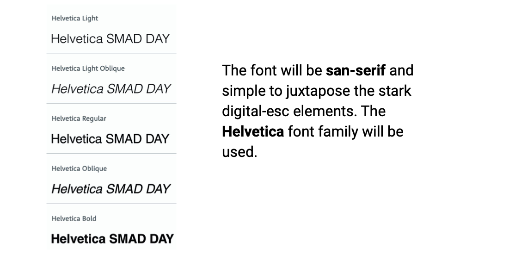
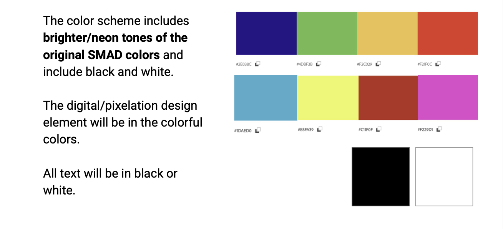
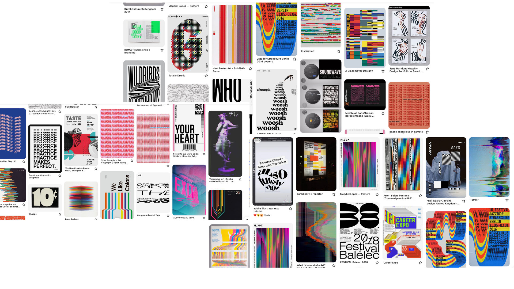
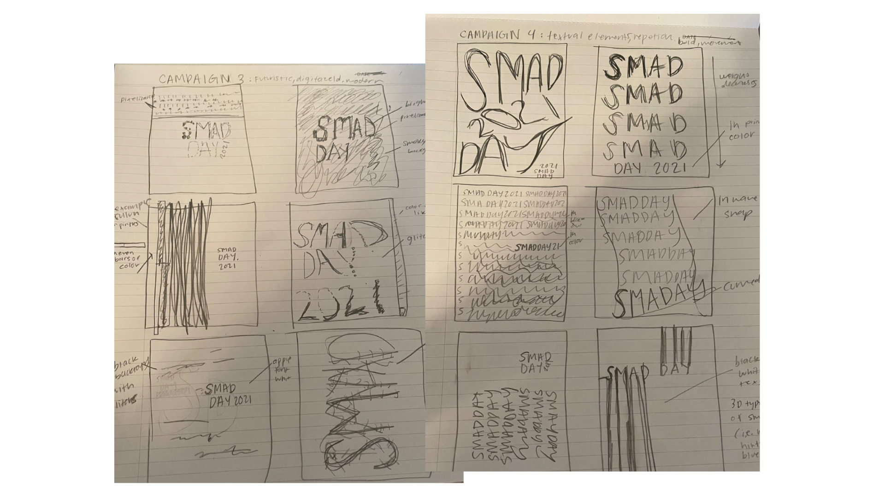
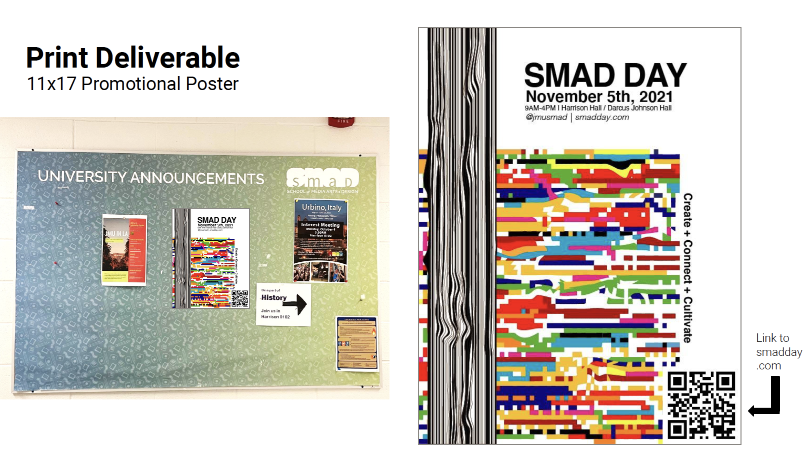
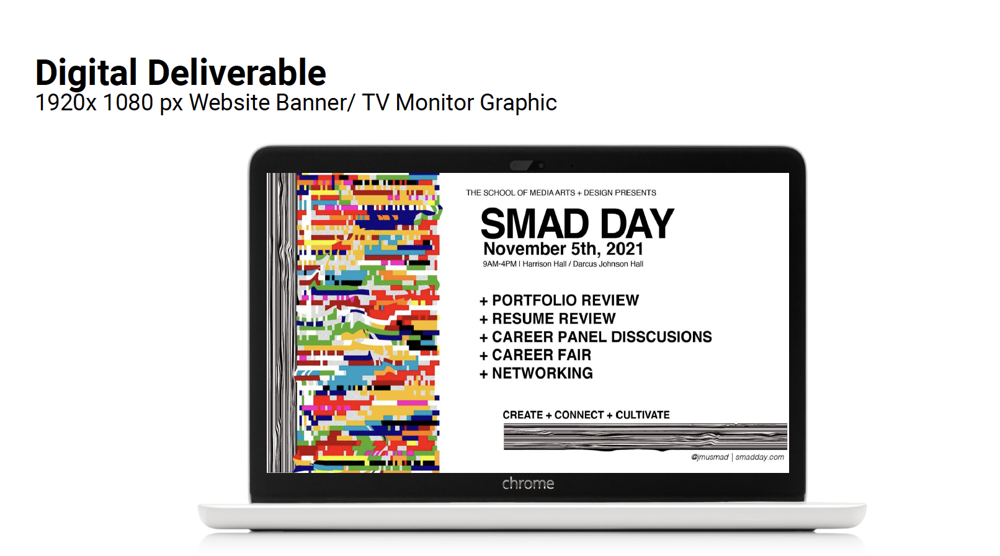
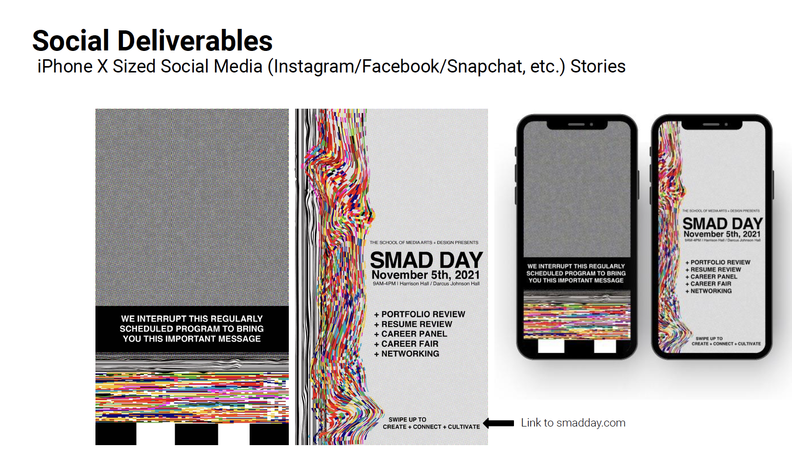

SMAD day is an annual networking and professional development event hosted by the School of Media Arts and Design (SMAD) at JMU for alumni, students, and community members.
The Ask
The project goal was to strategically develop the marketing of SMAD Day ’21 and create a comprehensive campaign to brand the event through print, digital, and social deliverables. All graphics were created through the Adobe Creative Cloud.
-Develop the marketing of SMAD Day 2021by creating a comprehensive campaign to brand the event.
-Create deliverables that appeal to the various target audiences. These deliverables include digital, social, and print.
Audience
Current Students:
-to inform them about what is SMAD day
-to advertise to attend informative career sessions, gain networking opportunities, and get feedback on their portfolio/resume.
Alumni:
-To inform them about information and opportunities they can participate in for SMAD Day.
Faculty/Staff:
-To inform them what is happening with SMAD day and logistical concerns.
Tone
-The client’s organization/event will be communicated in a professional manner yet light and creative. It will highlight the use of technology in the SMAD program.
-Adjectives include: Trendy, Hip, Concise, Modern, Creative, Fun, and Appealing
Strategy
-The campaign idea is to have a digitized style portraying
SMAD Day 2021 to be very modern and up-to-date with the
digital times. The font will suggest the organization to be very
to- the-point and direct which will emit a professional tone.
The pops of color will elevate and add to the tone for fun,
on-trend vibe.
-There will be digital elements in each deliverable such as
pixelization or a glitch-like effect.
This styling suggests SMAD as a bold major and that SMAD
Day guests are the future of the tech and design industry who
also welcome ingenuity and innovation.
Font Strategy

Color Strategy

Moodboard/Inspiration

Pre-liminary Sketches

Deliverables



Hand-coded and designed with love. | Julia Yeager 2022